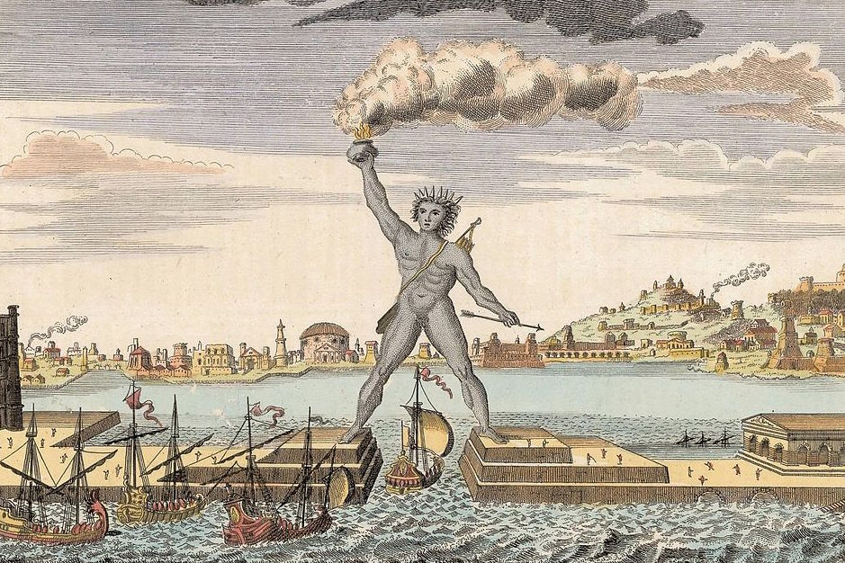
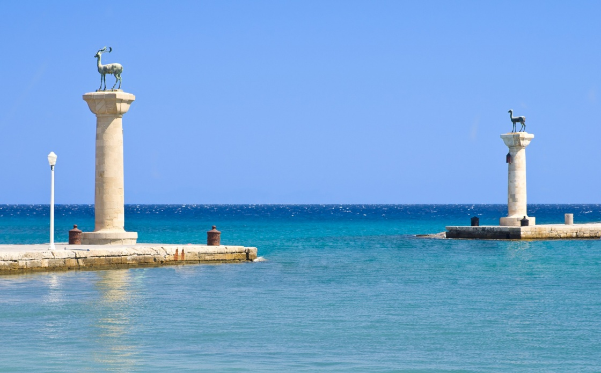

olbrzymich rozmiarów posąg Heliosa, greckiego bóstwa słońca, wybudowany na wyspie Rodos przez Charesa z Lindos w latach 294–282 p.n.e. Wykonano go z brązu i ustawiono u wejścia do portu Rodos dla upamiętnienia niepowodzenia Demetriusza Poliorketesa, który w latach 305–304 p.n.e. oblegał miasto. Posąg miał 30-32 metry wysokości, stał na 10-metrowym piedestale. Według starożytnych przekazów sama metalowa konstrukcja monumentu ważyła dwadzieścia ton, jednak ta wartość wydaje się mocno niedoszacowana, skoro Statua Wolności waży 225 ton. Posąg został zniszczony w 227/226 p.n.e., w wyniku trzęsienia ziemi.
Według zapisków kronikarskich do budowy tego posągu zużyto 500 talentów (ok. 12,7 tony) brązu oraz 300 talentów (ok. 7,6 tony) żelaza do wykonania szkieletu. Jego budowa trwała 12 lat. Konstrukcja figury oparta była na żelaznym szkielecie wypełnionym gliną i kamieniami dla zapewnienia stabilności i obłożonym płytami odlanymi z brązu. Oczy wysadzono kamieniami szlachetnymi. Przy montażu kolosa Chares zastosował oryginalną metodę: w miarę budowy posąg obsypywano ziemią, tworząc ogromny kopiec, który po zakończeniu budowy rozkopano.
Niektóre wyobrażenia posągu Heliosa na Rodos ukazują go w rozkroku nad wejściem do portu – statki miałyby wtedy przepływać pod posągiem. Uważa się, że nie jest to właściwy obraz – według niektórych taka konstrukcja nie była możliwa ze względów technicznych. Według opisów starożytnych kolos przedstawiał boga Heliosa w postawie wyprostowanej, odchylonego nieco do tyłu, wpatrującego się z natężeniem w dal i osłaniającego prawą dłonią oczy. Głowę jego zdobiła promienista korona (królewski diadem). Całość stała na marmurowym postumencie wybudowanym u wejścia do zatoki portu. Pierwotnie Helios miał błogosławić Rodos wyciągniętą ku przodowi prawą ręką, ale zrezygnowano z tego z przyczyn technicznych (niemożność zapewnienia figurze odpowiedniej stabilności przy takiej postawie). Niektóre przekazy wspominają o trzymanym w dłoni lampionie.
Posąg uległ zniszczeniu w 227/226 p.n.e., podczas trzęsienia ziemi. Jak pisał Strabon „statua leżała na ziemi powalona trzęsieniem ziemi i przełamana w kolanach”. Można przypuścić, że do zniszczenia kolosa przyczyniła się korozja szkieletu, wykonanego z nie najlepszej jakości żelaza i znajdującej się w wilgotnym środowisku wypełniającej posąg gliny.
Powalony posąg nadal budził niekłamany podziw starożytnych swoimi rozmiarami. Pliniusz Starszy wspomina, że tylko niewielu ludzi było w stanie objąć obydwiema rękami duży palec ręki statuy.
Ponieważ przepowiednia wyroczni delfickiej nie była przychylna odbudowie posągu, zrujnowany kolos leżał w wodzie aż do VII wieku. Arabowie, którzy w 654 r. zdobyli Rodos, sprzedali go na złom wędrownemu kupcowi z Emessy. Nabywca, jak podaje kronika Teofanesa Wyznawcy, rozbił resztki posągu i wywiózł je, objuczywszy nimi 900 wielbłądów.
Ostatnie odkrycia archeologiczne dowodzą, że posąg mógł stać na wzgórzu, na którym stoi teraz zamek.

Wyobrażenie wyglądu kolosa

Tak wygląda obecnie miejsce, w którym prawdopodomnie stał